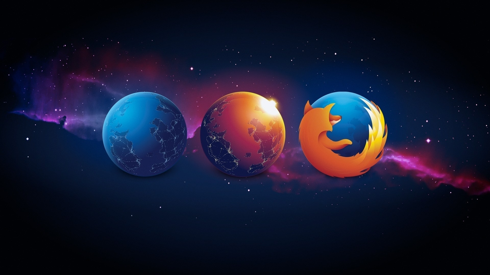

Mozilla Image/Logo Gallery

Mozilla is an open-source organization dedicated to keeping the web free and accessible for everyone.

Mozilla chose the red panda, also known as the "firefox," as their mascot to symbolize their mission of protecting the open web. The red panda's unique and rare nature aligns with Mozilla's commitment to innovation and preserving internet accessibility.